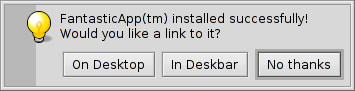
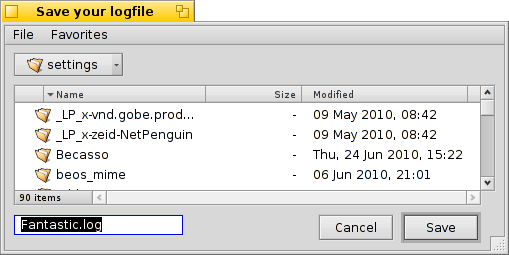
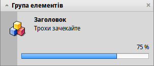
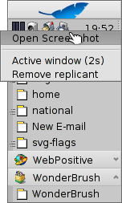

Haiku komut satırı uygulamaları
Haiku komut satırı uygulamaları
| Konum: | /boot/system/bin/ /boot/system/non-packaged/bin/ ~/config/bin/ ~/config/non-packaged/bin/ |
Haiku ile gelen tüm komut satırı uygulamaları /boot/system/bin/ konumunda yüklüdür. Kendinizin veya sonradan yüklediğiniz .hpkg komut satırı uygulamaları da ya orada ya da ~/config/bin/ konumunda bulunur. Bu konumların dışında /boot/system/non-packaged/bin/ veya ~/config/non-packaged/bin/ konumlarına da uygulamalar yüklenebilir. Tüm bu konumlar PATH değişkenine dahildir ve kendiliğinden bulunurlar.
Aşağıda Haiku'ya özel komut satırı uygulamalarının ortalama bir listesini görebilirsiniz, bu liste tüm uygulamaları kapsamamakta olup en kullanışlı olanları listeler. bin/ klasöründeki uygulamalara bakıp onlarla oynamaktan çekinmeyin. Bir uygulamayı --help parametresi ile başlatmak o uygulamanın seçeneklerini ve kullanımı ile ilgili bilgiyi görüntüler.
 Özniteliklerle ilgili: listattr, catattr, addattr, rmattr, copyattr
Özniteliklerle ilgili: listattr, catattr, addattr, rmattr, copyattr
Bu komutlar dosyaların özniteliklerini görüntüleme, okuma, ekleme ve çıkarma ile ilgilidir. Bu üstveri bilgisi yalnızca BFS ile biçimlendirilmiş disk bölümlerinde kullanılabilir. Bu dosyaları başka dosya sistemi ile biçimlendirilmiş bir diske taşımak tüm bu özniteliklerin kaybolmasına neden olur!
Tüm bu komutlar Uçbirim öznitelikleri bölümünde açıklanmıştır.
İndeks ile ilgili: lsindex, mkindex, reindex, rmindex
Bu komutlarla BFS indeksinin özniteliklerini listeleyebilir, yapabilir, yeniden indeksleyebilir veya kaldırabilirsiniz. Her disk bölümünün kendi özel indeksi vardır, bunu lütfen bir disk bölümünden bir başkasına dosya kopyalarken unutmayın.
Bu komutlar İndeks bölümünde açıklanmıştır.
Paket yönetimi ile ilgili: package, pkgman
package komutu HPKG paketlerini yönetmede kullanılır. Temel kullanımı öğrenmek için Installing applications makalesine bir göz atın. Genellikle haikuporter uygulaması kullanılarak "tarif" adı verilen programcıklarla paketler oluşturulur.
pkgman komutu paketleri aramak, yüklemek, güncellemek ve kaldırmak için kullanılır. Paket depoları eklenebilir, çıkartılabilir ve içlerindeki paketlerin listesi güncellenebilir. full-sync komutu kullanılarak daha agresif bir güncelleme yöntemi izlenebilir; bu komut gerektiğinde paketleri kaldırır veya eski bir sürümüne indirebilir.
Bir parametre hakkında daha fazla bilgi için "--help" bayrağını ekleyin, örn. pkgman search --help.
Betik yazımı için kullanışlı komutlar
Aşağıda özellikle betik yazımında çok kullanılan komutların bir listesini bulabilirsiniz (ayrıca bkz: Bash ve betik yazımı).
alert | alert komutu bildiğimiz uyarı penceresini gösterir; pencerede öntanımlı bir simge, açıklama metni ve üç taneye kadar düğme bulunur. Basılan düğmenin başlığını ve bir çıkış kodu döndürür (0 ile başlar). Örneğin: alert --idea "FantasticApp(tm) başarıyla yüklendi! \ Bir bağlantı yapılmasını ister misiniz?" "Masaüstü'nde" "Masaüstü Çubuğu'nda" "Kalsın, almayayım"  | |
filepanel | filepanel bir yükle veya kaydet paneli görüntüler ve kullanıcının bir dosya veya konum seçmesine olanak verir. Dönüş değeri olarak seçili dosyayı veya konumu döndürür. Parametre olarak bir başlangıç dizini, pencere başlığı veya bir dosyayı kaydederken veya sınırlandırırken öntanımlı bir ad verebilirsiniz. Aşağıdaki görsele ulaşmak için örnek olarak bu komutu kullanabilirsiniz: filepanel -s -t "Save your logfile" -d ~/config/settings -n Fantastic.log  | |
hey | hey, uygulamalara BMessage gönderen ve yanıtlarını yazdıran ufak bir yardımcı izlencedir. Bir uygulamayı betik yardımıyla veya komut satırından kullanılmasına (diğer bir tanımla uzaktan denetimine) izin verir. Kullanımı biraz karmaşık gelebilir; ancak Humdinger'in günlük yazısı iyi bir başlangıç materyali olabilir. Chris Herborth tarafından yazılan çok daha ayrıntılı bir hey öğreticisi de BeBook içinde bulunmaktadır. | |
notify | notify, bir ileti içeren bir bildirim paneli gösterir. notify --help komutunu çalıştırdığınızda çeşitli parametrelerin açıklamalarını görebilirsiniz. Bir bildirim, çeşitli ilerlemelerin durumunu göstermek için kullanılabilir. Bunu yaparken bir messageID ayarlamak ve ilerlemeyi (0,0 ve 1,0 arasında yüzde olarak gösterilen bir kayan noktalı değer) güncellerken kullanmak önemlidir. Yoksa ayarlanan zaman aşımından daha hızlı güncellerseniz birden çok bildirim paneli görebilirsiniz. notify --type progress --group "--group" --title "--title" --icon /boot/home/bebook.hvif \ --messageID MyMessageID --progress .75 "Keep waiting"  | |
query | query, Bul panelinin komut satırı sürümüdür. İsterseniz Bul panelinde hazırladığınız query'yi seçeneğini kullanıp başına ve sonuna çift tırnak ekleyip (") uçbirime yapıştırabilir veya yazdığınız betikte kullanabilirsiniz. | |
waitfor | waitfor, bir uygulamaya veya iş parçacığına başlamasını veya sonlanmasını söylemenin güzel bir yoludur. |
Diğer komutlar
checkfs | checkfs, dosya sistemindeki hataları denetlemek için önemli bir araçtır. Yalnızca /Haiku gibi bir bölüm adı veya aygıt adı ekleyin ve olası her yerdeki tutarsızlıkları denetleyecektir. | |
desklink | desklink, herhangi bir dosya, klasör, sorgu veya uygulama için Masaüstü Çubuğu tepsisinde bir simge kurabilir. Aynı zamanda, özel eylemler yürütmek için bir bağlam menüsü sunma özelliği de vardır. Örnek olarak, komut satırı screenshot uygulamasını çeşitli seçeneklerle eklemeyi deneyelim (ilk satırdaki "\", yalnızca Uçbirim'deki satır sonu içindir): desklink "cmd=Active window (2s):/bin/screenshot --window --border --delay 2" \ "cmd=Remove replicant:desklink --remove=screenshot" /bin/screenshot  | |
diskimage | diskimage, normal bir dosyayı bir disk aygıtı plank kaydetmenize izin verir. Örneğin, bir Haiku any boot kalıbını İzleyici'de bağlayabilir, Haiku Kur ile kullanmadan önce içindeki dosyaları değiştirebilir veya yeni dosyalar ekleyebilirsiniz. | |
launch_roster | The launch_daemon starts all sorts of services and applications at boot-up. For some it was instructed to re-start them if they were quit. If you don't want that – maybe you'd like to test a modified Tracker, for example – you use launch_roster to stop the re-starting of the application before quitting it. Similarly, you can start it again or get info about it. The parameter log prints out a log of all launch_daemon related events. launch_roster stop x-vnd.be-tskb | |
mountvolume | mountvolume komutunu bir çok kişi yerel disk bölümlerini ve diskleri bağlamak için kullanır; çünkü kullanımı çok kolaydır: Disk bölümünün adını verin, bu kadar basit. Daha fazla seçenek için --help argümanıyla çalıştırın. mount komutu, ek olarak bir ağ dosya sistemi kullanarak (örn. NFS4), uzak diskleri bağlamanıza izin verir. Kullanılan dosya sistemini -t parametresiyle, uzak konumu da -p parametresiyle verin. Dosya sistemi parametresi olarak /system/add-ons/kernel/file_system konumundaki herhangi bir dosya sistemini (ve ~/config veya "non-packaged" altındakiler de) kullanabilirsiniz. Bağlama noktası olarak bir klasör oluşturmalısınız. Örnek: mkdir -p /Diskİstasyonu mount -t nfs4 -p "192.168.178.3:volume1" /Diskİstasyonu | |
open | open, çok kullanışlı ufak tefek bir araçtır. Bu komut ile, herhangi bir dosyası, yeğlenen uygulaması ile doğrudan açabilirsiniz veya tam yolunu bilmenize gerek kalmadan herhangi bir uygulamayı imzasını kullanarak açabilirsiniz. URL'ler ve sanal dizinlerle da çalışır. Geçerli dizin için . ve üst dizin için .., klasörü İzleyici'de açar. | |
ramdisk | Bir ramdisk, bilgisayarın belleğinde çalışan bir sabit disk gibidir. Bundan dolayı çok hızlıdır; ancak kırılgandır; çünkü bilgisayar kapatıldığında, çöktüğünde veya elektrikler kesildiğinde bellek kaybolur. ramdisk create -s 1gb mkfs -q -t bfs /dev/disk/virtual/ram/0/raw RAMses mountvolume RamdiskAdı Not: Bir ramdisk yaratırken, ramdisk komutu, ona olan yolu yazdırır. Birden çok disk yaratırsanız /dev/disk/virtual/ram/0/raw yolu değişecektir! İçeriği korumak için, ramdisk'ler, sabit diskteki bir yazılabilir/okunabilir kalıba bağlanabilir. Bunun için, ramdisk'i her başlattığınızda okunmaya ve her kapattığınızda yazılmaya hazır bir dosya sağlamak zorundasınız. Bir kalıp dosyası yaratmak ve 500MiB yer ayırıp biçimlendirmek için şu komutu kullanın: dd if=/dev/zero of=RAMKalıbıAdı bs=500M count=1 mkfs -q -t bfs /dev/disk/virtual/ram/0/raw RAMKalıbıAdı ramdisk'i çalıştırmak için: ramdisk create RAMKalıbıAdı mountvolume RAMKalıbıAdı Değişikliklerin korunması için her zaman İzleyici'den düzgünce bağlantıyı kesmeli veya unmount /RAMKalıbıAdı komutunu kullanmalısınız; yoksa değişiklikler dosyaya geri yazılmaz! | |
screenmode | Bu komut, ekran kipini ayarlar (çözünürlük, bit derinliği, yenileme hızı). Normalde, bu ayarlar Ekran tercihlerinden yapılır. Başka bir parametre ise bunu Kısayollar tercihleri ile birlikte kullanıldığında kullanışlı yapar: Örn. --brightness +3, parlaklığı "3" birim artırır. Parlaklığı bir düğme kombinasyonu ile değiştirmek için yararlıdır. | |
setvolume | Bu komut, sistem ana ses düzeyini ayarlar. dB türünden belirli değerlerin dışında, ses düzeyini --togglemute (sessize al/aç), --mute (sessize al) veya --unmute (sesi aç) ve --increase (artır) veya --decrease (azalt) yapabilirsiniz. Kısayollar tercihlerinden düğme kombinasyonları ayarlamak için yararlıdır. |